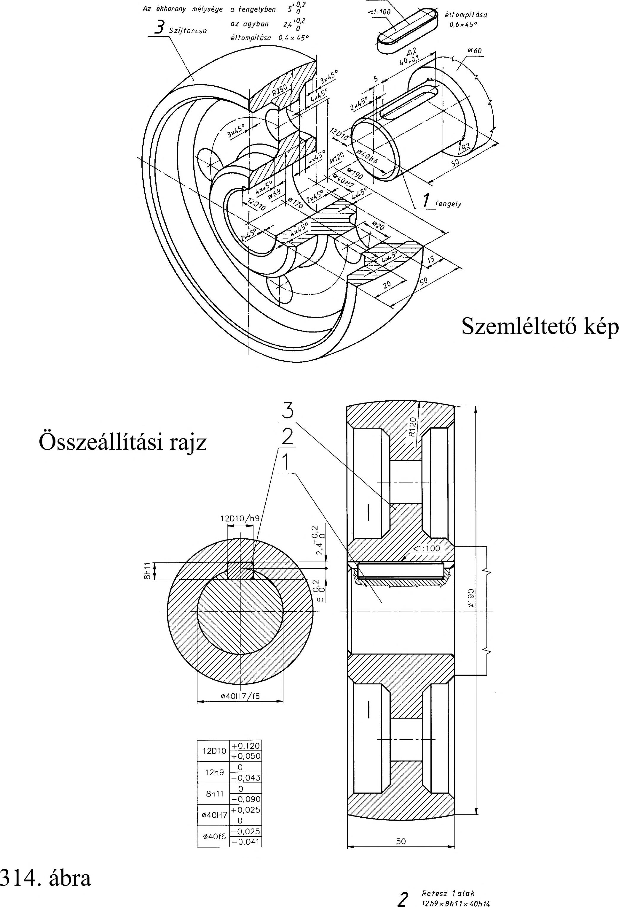

22. Hajtások 22. Hajtások A gépjárműtechnikai gyakorlatban a tengelyek közötti kapcsolat megvalósítására, a nyomaték és a fordulat átvitelére, módosítására hajtásokat alkalmazunk. A hajtások forgásátszármaztatása létrejöhet a súrlódó erő (dörzshajtás, szíjhajtás) és kényszerkapcsolat (fogaskerék-, lánchajtás) segítségével. 22.1. Szíjhajtások Távolabb fekvő tengelyek közötti forgatónyomaték átadására végtelenített szíj hajtást alkalmaznak. Szíj haj tásnál a forgatónyomatékot a hajtószíj és a szíj tárcsák érintkező felületein keletkező súrlódás viszi át. A végtelenített súrlódásos hajtásokat közös néven hevederhajtásnak is nevezik. Szerkezeti kialakításuk egyszerű. A tengelyekre egy nagy szíj tárcsát ékelnek, amely lehet sima vagy hornyolt. A tárcsákra feszítik ki a szíjat, amely tapadás útján viszi át a forgást. A tengelyek között nincs kényszerkapcsolat, a szíjak kismértékű csúszásával mindig számolni kell. A szíj haj tás előnye az egyszerű szerkezet, a kis zaj és biztonságos üzemelés. Hátránya, hogy nagy a szíj tárcsa tengelyén lévő csapágyak terhelése és nagyok a forgó tömegek. 22.1.1. Lapos bőr- és gumiszíj hajtás A szíj anyaga legtöbbször természetes állati bőr. A bőrszíjakon kívül használatosak még a textilszíjak, amelyek kender, len, pamut, teveszőr, vagy selyem anyagból készülnek. A gumi hajtószíjak két, vagy többrétegű szövetbetéttel készülnek. Rugalmasságuk és élettartamuk nagyobb, végtelenítésük könnyebb. Nagy teljesítmények átvitelére, nagy kerületi sebesség mellett is megfelelnek. Futásuk egyenletes és zajtalan, de olajtól, benzintől, gépzsírtól óvni kell a gumit. A szíjhajtás másik szerkezeti eleme a szíjtárcsa. A szíjtárcsát legtöbbször öntöttvasból készítik, de készülnek alumínium ötvözetből és acélból is (314. ábra). 22.1.2. Fogazottszíj hajtás A fogazottszíj hajtás a szíj haj tás és a lánchajtás előnyeit egyesíti, vagyis a hajtás előfeszítés nélkül csúszásmentesen viszi át a mozgást, megfelelő csillapítású, csendes, karbantartást nem igényel. A végtelenített fogasszíjak (MSZ-OS 24.4901-82) rugalmas, hajlékony, nagy szilárdságú műanyagba ágyazott sodrott acélhuzalból készült húzóelemekből épülnek fel, amelyek a hosszváltozást megakadályozzák. 22.1.3. Ékszíjhajtás Ékszíj haj tásnál a forgatónyomatékot a két szíj tárcsa között trapézszelvényű ékszíjjal visszük át. A szíj tárcsa megfelelő profilú hornyokkal ellátott tárcsa (315. ábra). A lapos bőrszíjhajtással szembeni előnye, hogy a horonyhatás miatt kisebb előfeszítéssel érhető el ugyanakkora kerületi erő, zajtalanabb üzemű, könnyen beszerezhető és nagyobb szíj sebességnél is alkalmazható. Hátránya, hogy az ékszíj élettartama kisebb, a környezeti hatásokra, szennyeződésre érzékenyebb és az igényesebb szerkezeti elemek miatt drágább, mint a lapos szíjhajtás. Ékszíjakat villamos motoroknál, szerszámgépeken és finommechanikai berendezéseken egyaránt használnak. Az ékszíj szabványos méretekkel készül 94
